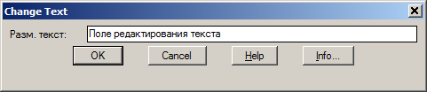

В ответ на приглашение выбора объектов выберите один или более примитивов типа TEXT, MTEXT, или DIMENSION.
В поле редактирования диалогового окна попадает текст первого, выбранного вами примитива.
При нажатии на кнопку OK для всех, выбранных вами примитивов устанавливается текст из поля редактирования диалогового окна.
